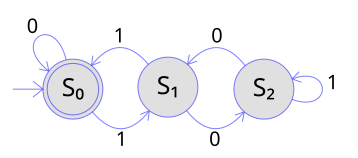

Constrained decoding

{kind=link}
Asking a model to name a tool and then checking whether the name exists leaves the invalid answer reachable. Making it unreachable is a different mechanism, and in a system with no privilege boundary it is also cheaper.
The mechanism
Before each token is sampled, the set of applet names still consistent with what has been generated so far is computed from the live table. Every token that cannot continue one of those names has its logit set to negative infinity. The sampler then chooses from what remains.
Because the model and the table share an address space, the grammar is built from the table itself. Adding an applet changes what can be generated with no separate schema to update, and there is no window in which the two disagree.
The result is that a name which is not in the table cannot be produced. There is nothing to validate afterwards, because the invalid output was never in the distribution.
Read-only mode is the same mechanism
Restricting the machine to read-only operations works by removing mutating applets from the reachable set before sampling. It never works by checking afterwards. That distinction is the entire security value of the arrangement, such as it is: a model asked to delete something in read-only mode cannot spell the word.
The self-test states it that way. One claim checks that the read-only grammar excludes every mutating applet, and a second checks that it still admits every read-only one, because a grammar that admits nothing would pass the first claim perfectly.
How it is tested
Randomised decoding under the grammar, many times, asserting that nothing generated ever escapes it. Plus a case that a name which extends another name stays reachable, which is the subtle one: if the shorter name terminates the grammar, the longer one becomes unreachable and the failure is a tool that silently cannot be selected.
The same mechanism now covers the argument to the skill runner. The applet name was always constrained, so a skill that does not exist was unreachable; its argument was free text, which is right for a filename somebody is typing and wrong where the whole space is enumerable. A model had to spell a content-addressed path exactly, so a skill it could not spell was a skill it could not use however good the judges said it was. The choices are a list now and the grammar is built from it.
What it does not solve
The grammar guarantees the shape of an answer and says nothing about whether it is the right answer. A model constrained to a set of twenty-three applets will always name one of the twenty-three, including when none of them is appropriate.
That is why the routing decision does not rest on generation at all. A closed-form classifier over one hidden state does the choosing, three independent cores vote, and their agreement rather than their verdict is the confidence signal. The routing page has the numbers.